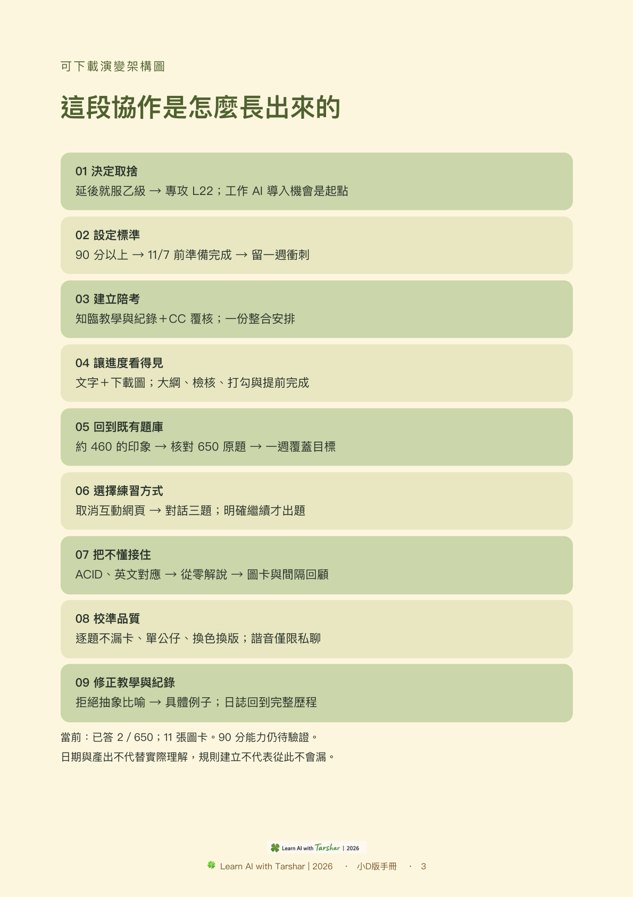
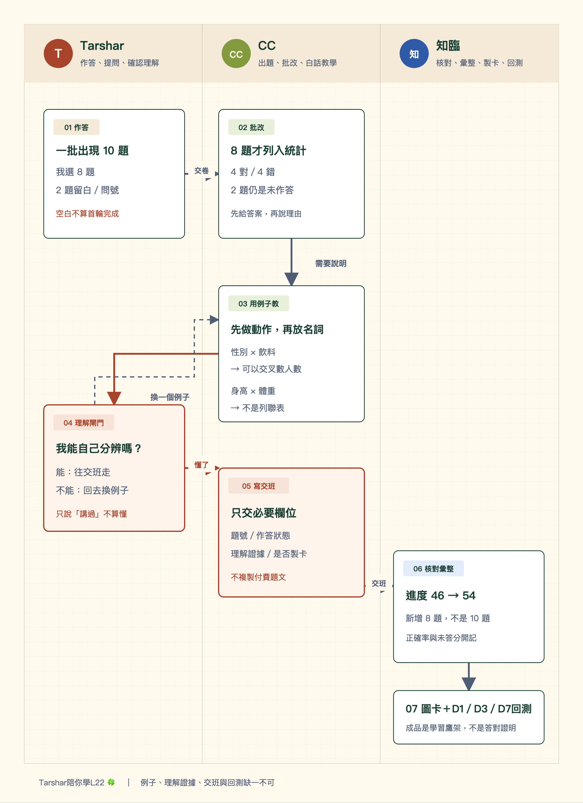
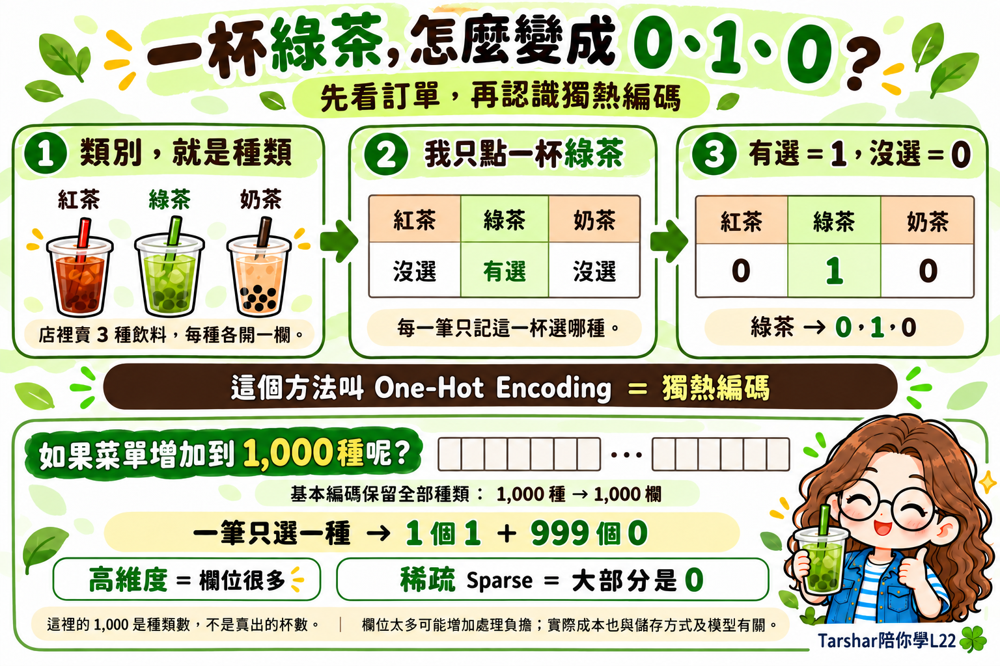
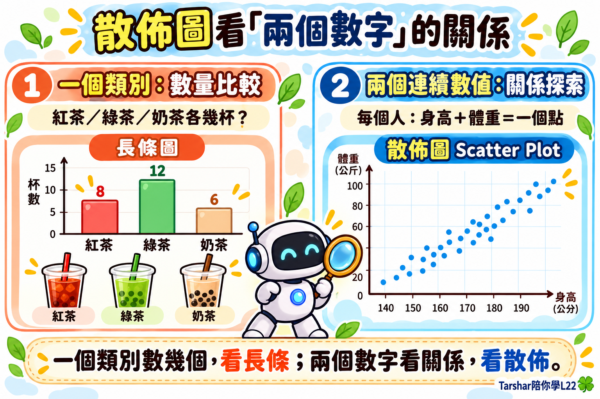
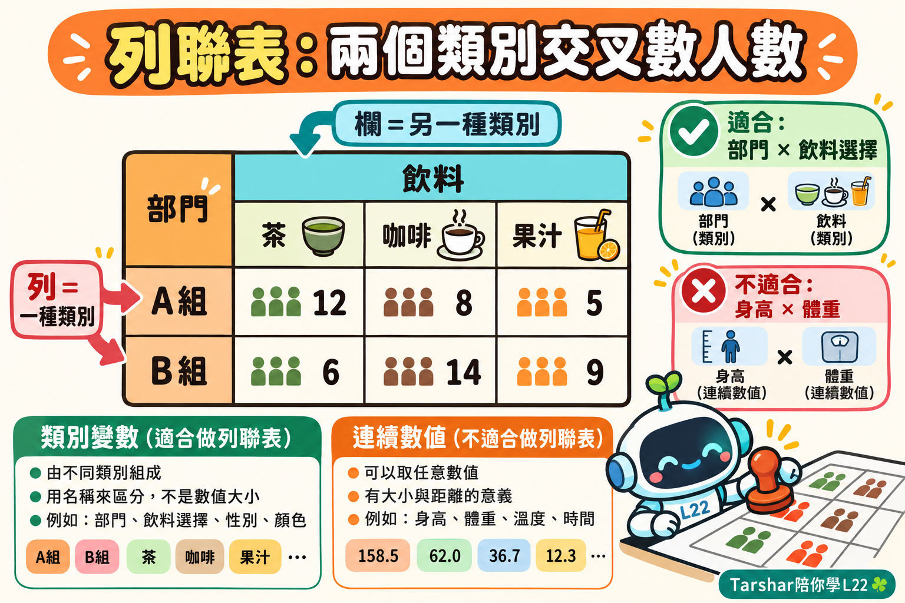

完整架構，一眼看懂

一批題目如何三方接力
這張圖直接用一批真實作答的統計示範：CC出題與判分，知臨先用具體例子教懂、再記錄進度與製卡，Tarshar用「懂了」控制流程是否往下走。

閱讀目錄
起點與目標：為什麼建立L22陪考系統
為什麼開始這份L22陪考日誌？這段協作從一個取捨開始。我決定先放棄這一批就服乙級，把考試延到下一批，近期集中火力準備 L22。原因不是一時興起，而是工作環境正積極推動 AI 導入，我又是銀髮相關的種子人員，希望提早取得中級能力與證明。
我當時提到，機關裡拿到中級的人「搞不好不到 5 人」。這是我對現場機會的感受，並非已查證的人數統計。真正確定的決策是：這一階段先把 L22 拿下，不再讓兩張考試同時分散注意力。
接著我要求 Codex 與 CC 一起陪考，從每天刷題開始。這使任務從一次問答，逐步長成一套能出題、教學、記錄、製卡、回測與每日結算的陪考系統。
成功標準：不是只求通過，而是90分以上
我把目標定為 90 分以上，並要求所有複習與達標能力在 11 月 7 日前完成，保留最後一週衝刺。執行正本將 11 月 6 日設為能力準備截止，11 月 7 日進行總驗收，11 月 8日至13日只做錯題、易混觀念、速度與穩定度加強。
我最初口述 11 月 15 日應考；既有官方查核紀錄標示 11 月 14 日。本日誌保留這個差異，最終仍以准考通知為準，不把後來查到的日期改寫成「一開始就知道」。
90 分能力不能用做了幾張圖卡或看完多少說明代替。現行檢核參考是：全範圍已複習、弱點完成延遲回測，並在近期具範圍覆蓋的限時混合卷連續三次達到 90%以上。
從計畫表到可視化：我要一眼看懂
我沒有完整跟到前一輪討論，所以要求全部重新對焦。除了文字，我還要一張可下載的架構圖；進度表要列出每段大綱與檢核點，完成可以打勾，提前完成也看得出來。
這個要求建立了兩條分開的證據線：教材與系統有沒有做好，以及我有沒有真的學會。看過、作答、答對、理解、延遲回測通過，是不同狀態；不能為了讓表格好看就提早打勾。
13 個單元的進度、題號覆蓋、錯題與回測日期，後來集中進唯一進度資料。每天結算必須同時呈現目標、實際、剩餘、正確率與需加強項目。
既有資產與需求：從「約460題」核對為650題
我提醒 AI，原本就有 L22 終極題庫，不應該另外長題目。核對本機後，HTML 小站共有 13 章，每章 50 題，合計 650 個唯一題號。既有核稿分為 453 題未見明顯問題、142 題有歧義或過度簡化、53 題需修正、2 題待查證。
453 是否就是我記得「約 460 題」的來源，沒有直接證據，不能代我下結論。可以確定的是：後續正式測驗只能使用這 650 題，保留原題幹、A～D 選項、順序、章節與原題號；出題前要交叉核對原始 JSON、來源 HTML 與核稿紀錄。
先前的自編暖身題可保留為學習歷史，但不計入 650 題覆蓋。題庫本身若有爭議，先標為待查核，也不能把來源問題算成我的錯。
介面取捨：取消互動網頁，保留視覺學習
我一開始希望做互動式練習網頁，可以直接點選答案，畫面有儀式感。但實際等候與操作成本太高，我後來明確取消，改回在對話中直接作答。
取消的是練習網站，不是視覺學習。我仍要求需要圖解的地方直接帶出圖，文字說明與可下載圖片要同時存在。題目維持清楚的選擇題格式，每題各自列 A～D，不能變成問答題或共用選項。
另一條節奏規則也在這裡確立：每批結束必須停下，只有我明確說「開始考試」或「繼續作答」才出下一批。停下時要說清楚目前完成到哪裡、後面還有什麼，不可無故中斷，也不可自動往下跑。
教學校準：不懂就留在原地換一個說法
ACID 是第一個明確的「沒讀過」。我要求只要說沒讀過、常搞混、答錯、打問號，或雖然答對卻問為什麼，就要從零說明並記錄；英文術語在對話中可加一個中文近似唸法，幫助我建立聲音記憶。
我指定要像李宏毅教授那樣有趣、淺顯：先用具體情境與動作，再把它轉成數字或規則，最後才放正式名詞。AI 曾用「每個類別各有一盞燈」解釋 One-Hot，我覺得更難懂；換成飲料店「選綠茶就是 0、1、0」後，我才表示理解。
後來我追問 1,000 杯飲料如何統計，AI 一度沿著編碼繼續講。我再把問題拉回目的：若要知道各品項賣幾杯，應使用分組計數與次數表；只有要把品項餵給模型時，才談編碼。這形成固定教學順序：先辨認我想完成什麼，再決定要教哪個術語。
實際互動一：我把「每類一盞燈」退回，才有綠茶010
這不是一句「換個生活例子」就帶過的修正。第一版把 One-Hot Encoding 解釋成「每個類別各有一盞燈」，我直接指出：「什麼叫做每個類別？各有一盞燈，這好奇怪的解釋方式誰看得懂。」問題不只在比喻不有趣，而是「類別」與「亮燈」都還是抽象詞，新手必須同時翻譯兩層意思。
第二版才從真的點飲料開始：店裡只有紅茶、綠茶、奶茶三種，我點一杯綠茶；紅茶沒選、綠茶有選、奶茶沒選，所以依序寫成 0、1、0。等我看懂這三步，AI 才補上正式名稱 One-Hot Encoding（獨熱編碼）。我回覆「懂了」，表示這個入口可以留下。
| 互動階段 | 真實內容 | 對學習系統的改變 |
|---|---|---|
| 我指出問題 | 「每個類別各有一盞燈」看不懂 | 不再把抽象名詞換成另一個抽象比喻 |
| AI重講 | 紅茶／綠茶／奶茶 → 點綠茶 → 沒選／有選／沒選 → 0／1／0 | 先讓我看見動作，再命名概念 |
| 我追問 | 「1,000杯飲料要做統計，看起來不應該用獨熱編碼，那該用什麼？」 | 先判斷任務目的，不因剛教過編碼就什麼都答編碼 |
| 最後釐清 | 算各品項賣幾杯用分組計數或次數表；品項要餵給模型才用編碼 | 同一個飲料例子同時分清「統計」與「模型輸入」 |
這段互動實際怎麼說
AI 第一次說：「可以想成每個類別各有一盞燈，被選到的那盞亮起來。」
我退回：「什麼叫做每個類別？各有一盞燈，這好奇怪的解釋方式誰看得懂。」
AI 第二次說：「先不要想燈。飲料店只有紅茶、綠茶、奶茶，你點綠茶。紅茶沒選寫 0、綠茶有選寫 1、奶茶沒選寫 0，所以是 0、1、0。」
我再追問：「那 1,000 杯飲料要做統計，看起來不應該用獨熱編碼，應該用什麼？」
AI 修正焦點：「若要知道各品項賣幾杯，就直接做分組計數或次數表；只有要把『飲料種類』交給模型計算時，才轉成 0、1、0。」
這五句讓讀者看得見真正的校準點：問題不是我記不住術語，而是 AI 一開始沒有先問清楚「我要做統計，還是要把資料交給模型」。

這張卡不是把第一次的文字原封不動排版，而是保存我真正理解的故事線：看見種類、做出選擇、轉成 0 與 1，最後才延伸到種類很多時會產生高維度與稀疏資料。私人對話可用中文近似唸法幫助記憶，分享圖卡則移除這類註記，避免把私人小抄當成正式教材。
知識圖卡：不會的觀念逐題做，但必須先理解
我提供喜歡的公仔風格，建立「Tarshar陪你學L22 🍀」系列。每張最多出現一個我的公仔；若內容需要更多角色，改用可愛 AI 機器人。每張要換色系、排版與表情動作，可用直式、橫式或四區塊，維持同系列辨識，同時避免只換文字。
我也糾正過署名仍寫「芝琳」、風格沒改對，以及私人中文諧音被印到分享圖卡的問題。現在的分享版只保留正式中英文，不放括號中文唸法；私人唸法只在對話出現。
原規則是每解答一題我不會的就做一張。後來為了避免「講過但我仍不懂」也被製成錯誤記憶，流程補上理解閘門：CC 講完後先等我確認懂了；只有 understanding_status=understood 且需要製卡，Codex 才製作、檢查、上傳與建立 1／3／7 天回測。
實際互動二：內容教對了，圖卡風格不對仍要重做
原題庫 ID15 中，我選 A 並加上問號，正解是 B。教學改用兩個畫面對照：紅茶、綠茶、奶茶各賣幾杯，是「一個類別數幾個」，看長條圖；每個人同時有身高與體重兩個連續數字，要看兩者關係，才看散佈圖。最後留下口訣：「一個類別數幾個，看長條；兩個數字看關係，看散佈。」
但第一張成品用了深色 3D 科技風。我沒有因為內容正確就收下，而是指出：「你這個風格跟前面會不會跳得太遠了？我指的是風格要一致，只是排版或者配色有點不同；你完全是另外一個奇異的風格。」AI 因此以既有綠茶卡和 Z-score 卡為視覺母版，改成天空藍、杏桃橘、奶油白、2D 手繪線條，並只放一個拿放大鏡的可愛 AI 機器人。

這段互動把「風格一致但每張有變化」落成可執行規格：角色數量、2D 線條與系列署名維持一致；色系、構圖、資訊區塊與角色動作可以大幅變化。成品通過不代表題目已學會，ID15仍排入10月19日、21日與25日回顧，用原題再次驗證。
一張圖卡到底經過什麼
| 階段 | 真實例子 | 產物是否可用 |
|---|---|---|
| 學習問題 | 我把「一個類別的數量」與「兩個連續數字的關係」混在一起 | 尚不可製卡 |
| 白話教學 | 飲料各賣幾杯看長條圖；身高與體重要看關係才用散佈圖 | 我能說出兩者差別 |
| 第一張圖 | 深色 3D 科技風，雖然內容正確，但與既有系列差太遠 | 退回重做 |
| 我的修正 | 系列風格一致；只能改配色、排版與動作，不能整套畫風換掉 | 形成視覺硬規則 |
| 第二張圖 | 天空藍、杏桃橘、奶油白、2D 手繪線條，只放一個 AI 機器人 | 可收下並上傳 |
| 學習驗證 | 圖卡完成後仍排入 1／3／7 天回測 | 尚不能因有圖就算學會 |
所以「做了一張圖卡」不是成果描述。完整的落地證據應該同時包含：它要解決哪個混淆、我是否聽懂、第一版為何退回、第二版改了什麼、成品在哪裡，以及之後怎麼確認我還記得。
建造歷程：3題、5題、10題，再切成首輪20題
最初採三題一輪，後來我要求一次五題，再因進度太慢改成一次十題。10 月 26 日又把首輪調成每批二十題，目標先看完全庫；第二輪才回到每批十題的深度複習。
我曾要求把錯題留到整批結束再教，後來又修正為「每十題對完答案就說明」，避免拖太久忘記當時怎麼想。現行規則以後者為準：一批十題，對完立即教，理解確認後才結束這批。
未選、只寫「？」或「完全不懂」記為未作答，不計錯也不計首輪完成；答錯則算已作答與首輪覆蓋。理解說明與延遲回測仍要分開，當下懂不代表隔天還記得。
題庫實體化：650題成為可列印A4 Word
我請 CC 把 HTML 小站完整題庫整理成 Word，並要求依序標示章節、每題都有答案，方便日後列印 A4。這項成果已完成為 650 題、146 頁的可編輯 Word，並逐題驗證題號與答案欄位。
這份 Word 是私有學習材料，檔案留本機與私人雲端，不把付費題文放進 GitHub。共同大腦只保留數量、驗證狀態與位置索引。
這一步解決「答案在哪裡」與手機上傳 0 B 的問題，也讓完整題庫不再依賴網頁介面才能查看。
分工改版：CC主持測驗，知臨負責彙整與圖卡
最早的分工是知臨主教練、CC 覆核；實際操作後，我決定改在 CC 做題。現行分工已反轉並固定：CC 負責讀原始 650 題、首輪每批出二十題、批改與重點說明；每章再集中完整教學。Codex／知臨不再與 CC 重複出題。
知臨負責接收每批交班、核對題號與來源、更新唯一進度、逐題 CSV、錯題、每日結算與回測佇列；等我確認理解後，再製作需要的知識圖卡並上傳雲端。
我只需要在 CC 的可見對話室作答與確認理解，不必把答案再複製給知臨。三方分工的重點是減少我的協調工作，不是把兩套紀錄丟給我自己整合。
可見性修正：CC的工作必須讓我看得到
一開始雖然 AI 說已派工給 CC，我卻在 Web 上看不到對話。真正的問題是工作落在另一個工作階段，而不是一個我能直接進入、繼續作答的可見測驗室。
後來建立固定對話室「課程｜L22測驗陪跑｜CC」，放在 Claude Code 的工作階段中，並釘選到側欄上方。舊三批測驗與教學歷史保留在同一處，避免每次重新說明規則。
這個修正形成一項跨 AI 原則：派工完成不等於使用者看得到。涉及持續互動的工作，必須提供固定入口、可見標題與可接續歷史；否則只是 AI 內部完成，還不算真正交付。
交接機制：CC寫JSON，知臨更新共同正本
兩個 AI 不直接改同一份進度檔。CC 每批結束後只寫一份精簡 JSON，內容包含題號、作答字母、正解、判定、我的原話、是否需教學、理解狀態、是否需圖卡與核稿狀態，不複製付費題幹與完整解析。
知臨讀取 JSON 後，先與原始題庫和核稿紀錄核對，再更新 GitHub 共同正本中的唯一進度、每日結算、逐題 CSV、錯題與圖卡索引。處理完成的 JSON 從「待彙整」移到「已彙整」，避免重複計算。
這個流程把出題權、寫入權與製卡權分開，降低兩邊互相覆寫的風險。交班檔只是一批資料，GitHub 中的進度正本才是兩個 AI 下一次工作都要先讀的狀態。
實際互動三：ID45如何從「不懂」走到交班、製卡與回測
ID45是最完整的一次雙 AI 接力實例。作答時我沒有猜字母，直接留下「不懂」。CC把列聯表拆成一個動作：拿兩個「用名稱分組」的類別交叉，格子裡只數人數。例如性別與飲料選擇可以交叉；身高與體重都是連續數值，不適合直接拿來做列聯表。
CC沒有把「已講解」當成「已理解」。我回覆「OK」後，還能分辨「性別×飲料適合；身高×體重不適合」，才把理解狀態寫成 understood。交班 JSON 只保存必要的學習證據，不抄付費題文：
| 交班欄位 | ID45實際紀錄 |
|---|---|
| 作答狀態 | 未作答；不計首輪完成 |
| 我的原話 | 不懂 |
| 是否已教學 | 是 |
| 理解證據 | 回覆「OK」，且能正確分辨適用與不適用的資料組合 |
| 是否需要圖卡 | 是 |
| 知臨後續 | 核對題號與來源、製卡、上傳、寫入圖卡索引與回測佇列 |
| 回測安排 | 10月22日、24日、28日 |

這一題特別顯示「聽懂」與「完成首輪作答」是兩件事。即使我已能做概念判斷，因為當時沒有選答案，進度仍誠實保留為未作答；之後必須用題庫回測，答得出來才形成提取證據。圖卡是中間鷹架，不是把未作答偷偷改成答對的工具。
三方接力的實際劇本
我在 CC 測驗室：「這題不懂。」
CC 教學：「先看資料能不能用『名稱』分組。性別和飲料選擇可以交叉數人數；身高和體重是連續數值，不能直接當成兩個類別格子。」
CC 檢核：「哪一組適合做列聯表：性別×飲料，還是身高×體重？」
我確認：「性別×飲料。」
CC 交班：只寫題號、未作答、已教學、理解證據、需要圖卡，不複製付費題文。
知臨接手：核對來源，把本題保留為未作答，製作列聯表圖卡、上傳、登記 1／3／7 天回測。
交班檔中對應的安全欄位可以長這樣：
{
"question_id": 45,
"answer_status": "unanswered",
"user_words": "不懂",
"teaching_delivered": true,
"understanding_status": "understood",
"card_needed": true,
"next_review": ["D1", "D3", "D7"]
}
這份 JSON 不是給我看的教材，而是讓另一個 AI 不必再問一次「剛才發生什麼」。真正給我看的，是白話說明、可下載圖卡與下一次回測。
每日追蹤：提醒、彙整與誠實差距
系統現有三種節奏：每 15 分鐘檢查是否出現新的 CC 交班檔；每天 07:00 提醒當日學習與回測；每天 21:00產生進度結算。自動化只做檢查與回報，不會自行出題。
每日結算固定包含：今日新作答、答對、答錯、未答、正確率、累計覆蓋、距離當日目標與累計目標的差距、待複習觀念及下一個行動。進度慢要照實呈現，不能用圖卡數或已講解數填補題目覆蓋。
10 月 21 日當天新作答 21 題，17 對、4 錯；當日目標 93 題，差 72 題。累計目標 372 題，實際 46 題，差 326 題。這些差距代表原定七日刷完全庫已大幅落後，需要重新配置每日題量，但不能補登不存在的作答。
一批題目的實際結算例子
10 月 26 日的一批共有 10 題出現在畫面上，我實際選了 8 題，其中 4 題答對、4 題答錯，另外 2 題空白。系統只把 8 題算進首輪作答；兩題即使後來聽懂，仍要留在未作答清單。這一批完成後，累計從 46 題增加到 54 題，而不是直接加 10 題。
| 本批項目 | 數量 | 如何計算 |
|---|---|---|
| 畫面出現 | 10 | 代表看過，不等於作答 |
| 實際選答 | 8 | 才計入首輪覆蓋 |
| 答對／答錯 | 4／4 | 本批選答正確率 50% |
| 空白／問號 | 2 | 保留未作答，日後補答 |
| 累計進度 | 54／650 | 由 46 加 8，不是加 10 |
系統設計與資料流程：一條學習線，兩種成果庫
學習線從 Tarshar 的明確指令開始：我說「開始考試」或「繼續作答」，CC 才從原庫出下一批；目前首輪是一批二十題。我交卷後，CC 批改與重點說明；指定題或章節報告完成理解確認後，CC 寫交班 JSON；知臨核對、彙整、製卡與排回測。
成果分為兩個位置。GitHub 共同大腦保存安全的文字正本、進度、題號、規則與索引，供 Codex 與 CC 接力；Google Drive 保存較大的知識圖卡、Word、PDF、HTML 與可下載成品。付費題文與完整詳解只留本機或私人雲端。
架構圖把這條資料流畫成可下載 PNG，並標出三個閘門：只有明確口令才出題、只有確認理解才製卡、只有核對來源才更新進度。
這張圖刻意畫的是一批題目真的怎麼走，而不是只畫三個角色的名稱。從我作答開始，CC 批改與用例子教學；我確認理解後，CC 才寫安全交班；知臨核對、更新進度、製卡與排回測。只要我還沒理解，流程就停在教學那一格，不會為了趕進度把問題包成圖卡。
目前進度儀表板：截至2026-10-26
| 指標 | 目前狀態 | 怎麼解讀 |
|---|---|---|
| 題庫總數 | 650 | 13章 × 每章50題 |
| 首輪唯一已作答 | 54 | 覆蓋率 8.31% |
| 答對／答錯 | 42／12 | 只計有選答案且可判分 |
| 累計正確率 | 77.78% | 尚未達到90分目標 |
| 剩餘未首輪作答 | 596 | 講過但未選仍不算完成 |
| 已製作知識圖卡 | 33 | 教材成果，不等於33題學會 |
| 待回測日期 | 10/22、10/24、10/28 | 依1／3／7天節奏安排 |
章節覆蓋目前為：L22101 已答 28／50、L22102 已答 17／50、L22401 已答 1／50，其餘十章仍為 0／50。這代表前兩章已有初步樣本，但全範圍覆蓋仍不足。
已講解但尚未完成首輪選答的題號包括 16、38、39、45、51、58、64、69、71、72、75、80、85、91、270。它們要留在回測或補答佇列，不能因為聽懂說明就自動變成答對。
現行操作手冊：首輪加速版怎麼跑
- Tarshar 在固定 CC 測驗室說「開始考試」或「繼續作答」。
- CC 從尚未作答的 650 題選二十題，逐題核對 JSON、原 HTML 與核稿狀態。
- CC 保留原題幹、A～D 選項與順序，標示全庫 ID、章節代碼及章內題號。
- Tarshar 一次回覆二十題；可用「？」或文字標記沒讀過、不懂、常搞混。
- CC 立即列出二十題的本人答案、原題正解與對錯；未選明列為未作答。
- 首輪答錯且未標不懂者，CC 先給三行重點；標「不懂」、空白或問號者先列正解，集中到每章結束的章節報告完整教學。
- Tarshar 若指定「這題現在講」，CC 才在當批採具體例子→動作或數字→正式名詞的順序補講；沒有指定就不逐題等待確認。
- CC 寫交班 JSON 並停下，不自動出下一批。
- 知臨核對交班，更新共同正本；理解確認且需要圖卡的項目才進製卡、上傳與回測。
- 每 50 題產出一份章節報告，集中處理錯題與不懂題；21:00 日結照實顯示進度與差距，下一批仍由 Tarshar 的口令啟動。
這是 10 月 26 日為了加快首輪覆蓋所做的調整。先前的「每批十題、每題講到懂」保留為第二輪深度複習模式，不刪除，也不再拿來限制第一輪速度。
決策帳：現在採用什麼
| 決定 | 現行狀態與理由 |
|---|---|
| 延後就服乙級、集中 L22 | 已確認；把有限時間集中在目前更有工作先機的目標 |
| 目標90分以上 | 已確認；11/6完成能力準備，11/7驗收，保留一週衝刺 |
| 650題原庫是唯一正式題源 | 已確認；禁止AI自編題冒充題庫 |
| 首輪每批20題 | 已確認；10月26日起先快速看完全庫，第二輪再回到10題深度模式 |
| 首輪錯題三行重點、每章集中教學 | 已確認；兼顧速度與理解，指定題仍可立即補講 |
| CC主持測驗與教學 | 已確認；固定可見測驗室，等口令才出題 |
| 知臨彙整、製卡與追蹤 | 已確認；單一寫入端避免兩邊覆寫 |
| 圖卡先過理解閘門 | 已確認；不把仍看不懂的說法固化成教材 |
| 互動練習網頁 | 已取消；對話作答更快，圖解與下載檔仍保留 |
| 中文近似唸法 | 只在私聊小抄；分享圖卡不放 |
AI被我修正後，留下哪些可重用規則
第一，不能因最近一個例子好寫，就把完整專案縮成那個例子。第一版日誌只寫「一杯綠茶」，我要求重做，才回到從取捨、目標、題庫、教學到交班系統的完整主線。
第二，派工不能只存在 AI 內部。若我看不到 CC 的對話、不能從手機接續，就不算可用的協作。固定入口、可見標題、釘選與歷史，比「已派工」四個字更重要。
第三，完成教材不等於完成學習。圖卡、Word、說明與排程都只是支援；作答覆蓋、延遲回測與限時成績才是能力證據。
第四，雙 AI 的價值來自權責與資料流清楚。誰出題、誰寫進度、誰製卡、哪個檔案是正本，都要明確；否則兩個 AI 只會產生兩份待整理的工作。
學習與研究入口
本案可延伸三個研究方向。第一是教學鷹架與學習者控制：我拒絕抽象「燈」比喻、接受飲料店的逐步轉換，也要求未理解時不得往下。第二是人機協作中的可追溯性與協調負擔：逐題交班、固定入口與單一正本是否能減少我追著提醒。第三是長上下文與近因偏誤：為什麼 AI 容易把最近的綠茶故事誤當成整段協作主線。
可搜尋關鍵字包括：Instructional Scaffolding（教學鷹架）、Learner Control（學習者控制）、Retrieval Practice（提取練習）、Spaced Practice（間隔複習）、Task Traceability（任務可追溯性）、Coordination Burden（協調負擔）、Long Context（長上下文）與 Recency Bias（近因偏誤）。
目前證據是這次現場協作紀錄與進度資料，能描述需求如何被提出、誤解與修正；還不能宣稱新流程已提高實考分數，或已證明任何普遍因果。
交付與驗收：成果位置、安全界線與待驗證
成果狀態已確認：現行成果包括650 題逐題進度、每日結算、錯題與回測佇列、CC 交班規格、可列印題庫 Word、33 張知識圖卡，以及本版 Word、PDF、HTML、封面、雙核心架構圖與一批題目的三方接力實例圖。
待驗證事項仍包括90分能力、延遲回測留存率與剩餘596題的完成節奏。
GitHub 共同大腦不保存付費題目全文、完整選項與詳解；本日誌只記題號、數量、規則與學習證據。這條界線讓 Codex 與 CC 能共讀進度，同時不把付費內容公開化。
下一步：回到考試，不再重建工具
系統已能接力，現在的主線不是再做一個新介面，而是提高題庫覆蓋與 90 分能力。下一個動作是由我在 CC 固定測驗室說「繼續作答」，完成下一批二十題；CC 批改後交棒，知臨再更新進度與圖卡。
同時必須處理到期回測，並重新估算 596 題剩餘量如何在 11 月 6 日前完成。若每日配置無法負荷，要誠實調整題量與補強節奏，不以假進度換取漂亮百分比。
本次演化一句話：我把兩個 AI 從「都來幫忙」改造成一條有固定入口、單一正本、理解閘門、逐批交接與每日證據的 L22 陪考流水線。